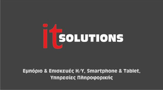
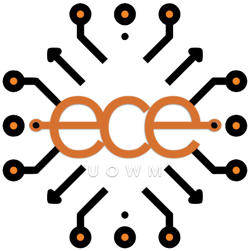

WORKING EXPERIENCE

Full Stack Web Developer
Hotel Feedback
/ JAN 2024 - PRESENT
Tech stack: JavaScript, jQuery, HTML5, CSS, Bootstrap, PHP, C#, SQL SERVER, React
As a full-stack Web Developer at Hotel Feedback my role revolves around the maintenance,
support, and enhancement of the existing platform. Leveraging a comprehensive skill set,
I employ JavaScript, jQuery, CSS, Bootstrap, PHP, C#, SQL SERVER, and React to ensure the
seamless operation and continuous improvement of the system. My responsibilities encompass
not only troubleshooting and support but also the implementation of innovative solutions to
elevate the platform's functionality. This experience allows me to navigate the intricacies
of both front-end and back-end development, showcasing my proficiency in delivering high-quality
and user-centric solutions in a dynamic and challenging environment.
Junior Frontend Developer
Skytrack
/ JAN 2023 - JAN 2024
Tech stack: Laravel, JavaScript, jQuery, HTML5, CSS, Bootstrap, SASS, PHP, WordPress
As a Junior Frontend Developer at Skytrack, a rapidly growing GPS tracking provider based in Thessaloniki,
specializing in GPS-based fleet management systems, I played a key role in designing, developing, and maintaining
software and web applications. With proficiency in HTML5, CSS, Bootstrap, JavaScript, jQuery, Blade, and PHP, I
contributed to dynamic and visually appealing web applications. Collaborating with a talented team, I delivered
high-quality software products, staying updated on industry trends and best practices. My dedication, problem-solving
skills, and attention to detail aimed to contribute to Skytrack's success through efficient and robust software solutions.
Tech stack: MySQL, Windows Domain, Network Management, Computer Hardware Troubleshooting,
Hardware Diagnostics, Computer Hardware Assembly, Active Directory Experience
During my military service, with primary occupational specialty
“Computer and Network Specialist” in the Information Technology Support Center of the
88th Military Command of Lesvos in the Hellenic Army, I was assigned the following duties:
- Network Support: Integration of computers into the Windows Domain (Server 2012 R2, Server 2016 R2), Network addressing, Switch configuration, Network user management (Active Directory)
- Technical Support for Computers and Peripherals: Fault diagnosis and replacement of defective components, Assembly of new computers, Installation and configuration of operating systems and office applications (MS Windows, MS Office), Printer maintenance, Connection and operation of projectors, Connection and operation of UPS (Uninterruptible Power Supply)
- Handling Office Applications: Microsoft Word 2003-2016, Microsoft Excel 2003-2016, Microsoft Outlook 2003-2016, Microsoft PowerPoint 2003-2016, Microsoft Access 2003-2016

Information Technology Engineer (Internship)
It Solutions - Mokkas Ioannis
/ AUG 2020 - OCT 2020
Tech stack: Windows Server, Computer Hardware, Computer Hardware Troubleshooting, Hardware Diagnostics, Computer Hardware Assembly
During my internship, I worked at the hosting company named IOANNIS MOKKAS, operating under the
trade name IT SOLUTIONS, for the period August 2020 to October 2020. In this role, I provided
services related to software and hardware upgrading, management, and repair.
EDUCATION

Department of Electrical & Computer Engineering
University of Western
Macedonia
/ SEP 2014 - SEP 2022
The Department caters for the fundamental education and acquisition of professional skills and
specialized knowledge in the following subject areas:
- Computer Science
- Software and Systems Technologies
- Signals, Telecommunications and Networks
- Electronics and Electrical Engineering
- Energy
DIPLOMA THESIS
Open data platform with services and tools for crops and agriculture
University of Western Macedonia
/ OCT 2021 - OCT 2022
Tech stack: JavaScript, jQuery, HTML5, CSS, Bootstrap, PHP, PhpMyAdmin, MySQL, Postman, REST APIs, npm
I successfully designed and implemented an open data web platform, kalliergeia.gr, as part of my thesis. This platform serves as a valuable tool for an open community engaged in agriculture, aiming to enhance and expand agricultural practices. Notably, it facilitates data discovery, collection, and exchange, reducing time and making the cultivation process more economical and productive. The platform provides users with tools in Greek or English, including a specialized search engine, financial information, and real-time weather updates. I utilized HTML, CSS, Bootstrap, PHP, JAVASCRIPT, and MySQL for the platform's development, showcasing my proficiency in various programming languages. The platform's user-friendly environment sets it apart, offering valuable data on microclimates and crop enemies.
LANGUAGES
Greek
- Native Speaker
- Excellent knowledge
- Degree: Certificate of Proficiency in English University of Michigan
- Intermediate
- Degree: Goethe-Zertifikat B1
SKILLS
- JavaScript
- jQuery
- CSS
- Bootstrap
- SASS
- HMTL5
- React.js/Redux
- Typescript
- Laravel
- PHP
- MySQL
- C#
TOOLS & TECHNOLOGIES
- Git
- Bash
- Jira
- Bitbucket
- PhpMyAdmin
- MySQL Workbench